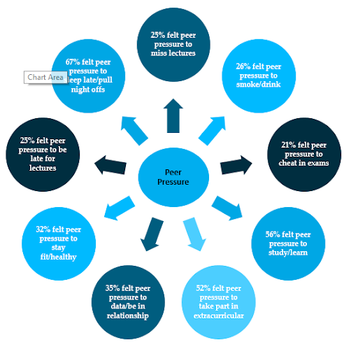
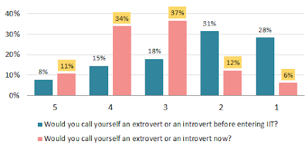
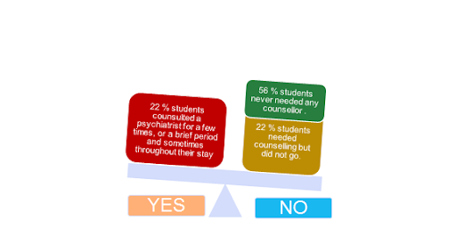
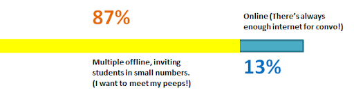

Miscellaneous
Have you ever visited the hospital despite not being unwell, and why?
Which of these peer pressures have you faced while at IIT?
Transformation in students before and after IIT
IITB students on consultation for Mental Health
How would you want your convocation to be held?

COPYRIGHT © 2021 INSIGHT, IIT BOMBAY
Back to Top